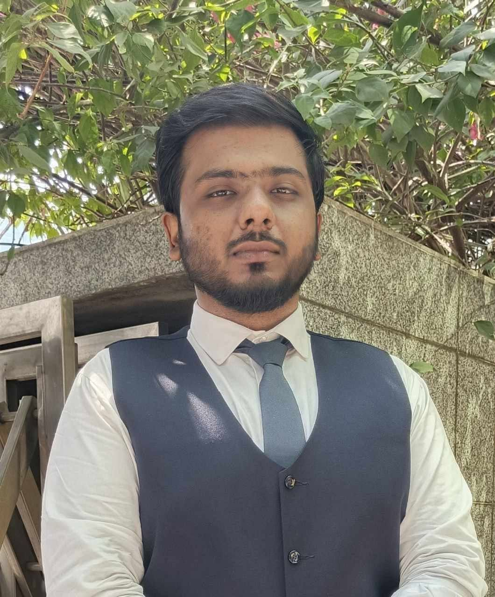

Two Uplift Probe members named among the top 50 delegates in Asia and the Pacific


Mohammed Fahim Murshed, Founder and Executive Director, and Md. Nijam Uddin Sarkar, Senior Researcher, were nominated as Youth Leadership Outstanding Award 2025 candidates at the Asia Pacific Youth Leader Assembly 2025 in Seoul, South Korea.
Fahim received a 40% merit scholarship and Nijam an 80% scholarship for the otherwise self-funded summit. Both were placed among the top 50 delegates from Asia and the Pacific.
The Global Goals Committee selected them on their portfolios, research activity, leadership roles, volunteering and essays on global challenges and sustainable development.